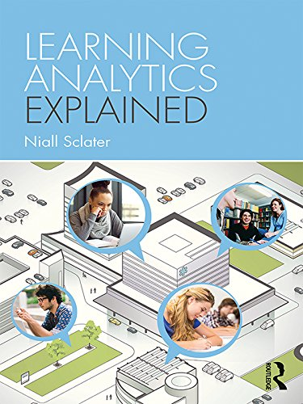

My Personal Development (2022)
I have a professional interest in following areas ...
- Education
- Mathematics
- Technology
- Engineering
- Science
- Management
... and how they are all inter-linked.
Much of our education was based on a reductionist model. New developments in education have taken a more holistic view using systems thinking approach to tackle future challenges.
In order for this paradigm shift to fully take place we need to ensure that education system provides students with the relevant transformative skills that will enable them to face their future with confidence.
How do I keep up to date with future developments?
Work Based
I keep up to date with Learning Technology developments and software through emails, webpages and webinars.
Blackboard
- Bb Community
- check dates
- 16 February 2022 1100-1200
JISC
- Learning Analytics
- monthly online updates (user group)
- Digifest
- 8-9 March 2022
ALT
(Note: I am not a member)
ALT-J Journals are a great source of research material on all aspects of Learning Tech.
Buddycheck
Other resources of interest
Youtube links ...
Podcasts ...
Organisations
I am a member of the following organisations ...
- Member of the Associations of Teachers of Mathematics (Mathematics Teachers)
- New member of Operational Research Society (including Analytics)
- Active member of an Educational NGO
Books and Magazines
Here is a selection of books that I own with regards to the topics listed above.


(Note: This does not include the books I have on my kindle)
I regularly purchase a the following magazines
(Note: A lot of the content within the linux magazines, which go back to 2003, are still very relevant today)
... and of course, working next to a library, I have access to a vast array of books and journals
Book of the week (Kindle)

A final thought
On first sight the film "Moneyball" is just an enjoyable film, but on further inspection it turns out to be a great resource for understanding what analytics is all about.
The opportunities for learning are all around us. As educators it is our responsibility to open up this world so that the next generation can experience it for themselves.